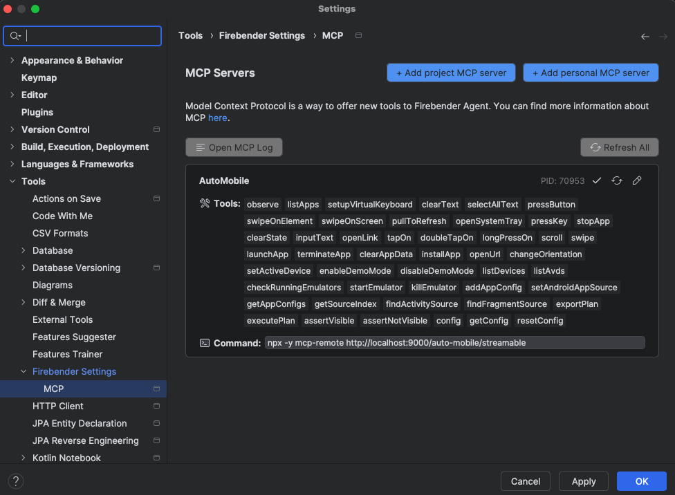

Running from Source¶
Whether you want to contribute to AutoMobile or just want to run the MCP directly from source, this guide will set you up for the development environment maintainers use.
Quick Setup (Recommended)¶
The easiest way to set up a worktree for development is to use the setup script:
# Full setup: build, link, and configure Claude Code
./scripts/setup-worktree.sh
# Setup and immediately start hot-reload dev server
./scripts/setup-worktree.sh --dev
# Clean up worktree-specific artifacts
./scripts/setup-worktree.sh --clean
This script:
1. Installs dependencies if needed
2. Builds the project
3. Creates a unique executable for this worktree (e.g., auto-mobile-186 for issue #186)
4. Configures .mcp.local.json for this worktree’s build (Claude Code, Cursor, etc.)
After running the script, restart your MCP client to pick up the new configuration.
Manual Setup¶
If you prefer to set up manually:
bun install
bun run build
bun link
Note: bun link registers the package globally, but only one worktree can be linked at a time.
For multiple worktrees, use the setup script which creates unique executables per worktree.
Hot Reload Development¶
AutoMobile supports hot reload development via streamable HTTP transport. When you make code changes, the server automatically restarts, allowing rapid iteration without manual restarts.
Starting the Dev Server¶
# Start with hot reloading (bun --watch), streamable is the default
bun run dev
# Custom port (overrides auto-detection)
bun run dev:port 8080
Automatic Port Detection (Worktree Isolation)¶
The dev server automatically detects the port from your git branch name, enabling multiple worktrees to run simultaneously without port conflicts:
| Branch | Port |
|---|---|
work/164-feature-name |
9164 |
work/120-other-feature |
9120 |
main (no issue number) |
9000 |
How it works: - Extracts the first number (1-999) from the branch name - Adds it to base port 9000 (e.g., issue #164 → port 9164) - Falls back to 9000 if no number is found (or if the number is 1000+)
Override options:
# Environment variable (highest priority)
AUTO_MOBILE_PORT=8080 bun run dev
# Command line flag
bun run dev:port 8080
This allows you to run multiple worktrees simultaneously:
# Terminal 1 (work/164-feature)
cd ~/worktrees/auto-mobile/work-164-feature
bun run dev # → port 9164
# Terminal 2 (work/120-other)
cd ~/worktrees/auto-mobile/work-120-other
bun run dev # → port 9120
Health Check Endpoint¶
Monitor server status and detect restarts using the health endpoint:
# Use the port for your worktree (e.g., 9164 for issue #164)
curl http://localhost:9164/health
Response:
{
"status": "ok",
"server": "AutoMobile",
"version": "0.0.6",
"instanceId": "unique-server-instance-id",
"port": 9164,
"branch": "work/164-feature-name",
"uptime": {
"ms": 12345,
"human": "12s"
},
"activeSessions": 1,
"transport": "streamable"
}
instanceIdchanges each time the server restarts (detect reconnection needs)portshows the auto-detected or configured portbranchshows the current git branch
MCP Client Configuration¶
The setup script automatically creates .mcp.local.json with the correct configuration.
If you need to configure manually, here are the options:
Option 1: Direct Executable (Created by setup script)¶
The setup script creates a worktree-specific executable and configures it in .mcp.local.json:
{
"mcpServers": {
"auto-mobile": {
"type": "stdio",
"command": "/Users/you/.bun/bin/auto-mobile-186",
"args": ["--debug-perf", "--debug"],
"env": {
"ANDROID_HOME": "/path/to/Android/sdk"
}
}
}
}
Option 2: Streamable HTTP (Best for Hot Reload)¶
For hot-reload development with bun run dev, use HTTP transport. Add to
.mcp.local.json:
{
"mcpServers": {
"auto-mobile": {
"type": "url",
"url": "http://localhost:9186/auto-mobile/streamable"
}
}
}
Replace 9186 with your worktree’s port (9000 + issue number).
Option 3: Using mcp-remote¶
For MCP clients that only support stdio transport, use mcp-remote as a proxy:
{
"mcpServers": {
"auto-mobile": {
"command": "npx",
"args": [
"-y",
"mcp-remote",
"http://localhost:9186/auto-mobile/streamable"
]
}
}
}

Git Hooks for Automatic Setup¶
You can configure git hooks to automatically run the setup script when checking out a worktree.
Post-Checkout Hook¶
Create .git/hooks/post-checkout (or add to existing):
#!/bin/bash
# Auto-setup worktree after checkout
# Only run for branch checkouts (not file checkouts)
if [ "$3" = "1" ]; then
if [ -f "./scripts/setup-worktree.sh" ]; then
echo "Running worktree setup..."
./scripts/setup-worktree.sh
fi
fi
Make it executable:
chmod +x .git/hooks/post-checkout
For Worktrees¶
For git worktrees, hooks are shared from the main repository. You can also use a global git hook or run the setup script manually after creating a new worktree:
git worktree add ../work-123-my-feature origin/main
cd ../work-123-my-feature
./scripts/setup-worktree.sh
Troubleshooting¶
Server Restarts and Session Loss¶
When the server restarts (due to code changes), active MCP sessions are lost. This is expected behavior.
Symptoms: - Error: “Session not found” - MCP client shows connection errors - Tools stop responding
Solutions:
1. Claude Code: Restart the MCP server from Claude Code’s interface or restart Claude Code
2. Cursor/Other clients: Reload the window or restart the client
3. Check server is running: curl http://localhost:9000/health
Port Already in Use¶
If you see “EADDRINUSE” or the server won’t start:
# Find and kill processes using port 9000
lsof -i :9000
kill -9 <PID>
# Or use a different port
bun run dev:port 9001
Connection Refused¶
Symptoms:
- curl: (7) Failed to connect to localhost port 9000
- MCP client can’t connect
Solutions:
1. Ensure the dev server is running: bun run dev
2. Check the correct port is being used
3. Look for errors in the server output
mcp-remote Issues¶
If using mcp-remote and experiencing issues:
-
Stale mcp-remote process: Kill any lingering processes
pkill -f mcp-remote -
Version mismatch: Ensure mcp-remote is up to date
npx -y mcp-remote@latest http://localhost:9000/auto-mobile/streamable -
Consider native HTTP: If your MCP client supports it, use native HTTP instead of mcp-remote for better reliability
Debug Mode¶
Enable debug logging for more visibility:
bun run dev --debug
Enable performance timing:
bun run dev --debug-perf
Development Tips¶
Verify Connection¶
Quick test to verify the server is working:
# Check health
curl http://localhost:9000/health
# Initialize a session
curl -X POST http://localhost:9000/auto-mobile/streamable \
-H "Content-Type: application/json" \
-H "Accept: application/json, text/event-stream" \
-d '{"jsonrpc":"2.0","method":"initialize","id":1,"params":{"protocolVersion":"2024-11-05","capabilities":{},"clientInfo":{"name":"test","version":"1.0"}}}'
Multiple Instances¶
To run multiple dev servers (e.g., for testing):
# Terminal 1
bun run dev:port 9000
# Terminal 2
bun run dev:port 9001
Watching Logs¶
Server logs are written to stdout. For persistent logging, you can redirect:
bun run dev 2>&1 | tee dev-server.log
Implementation References¶
- Worktree setup script: https://github.com/kaeawc/auto-mobile/blob/main/scripts/setup-worktree.sh#L1-L301
- Dev scripts (
dev,dev:port): https://github.com/kaeawc/auto-mobile/blob/main/package.json#L5-L20 - Port detection and health endpoint: https://github.com/kaeawc/auto-mobile/blob/main/src/index.ts#L17-L274